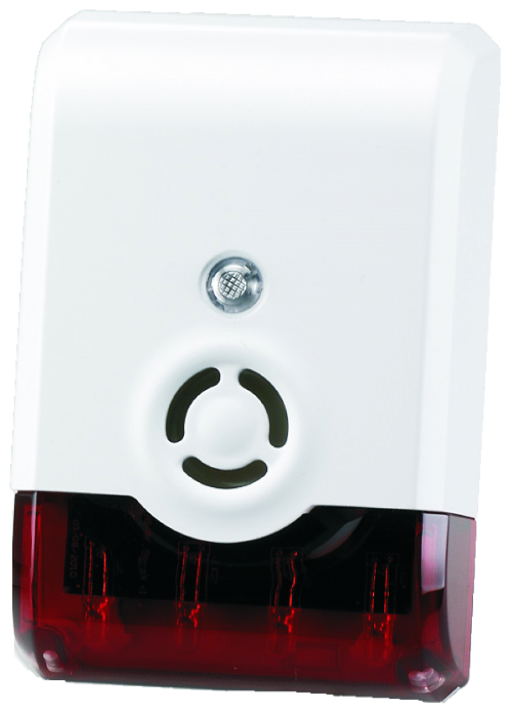
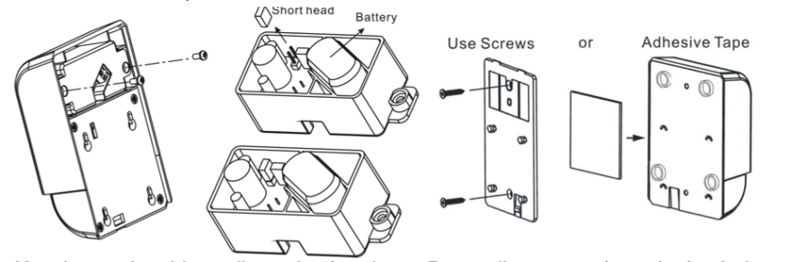

VIS_ZM1602
Firmware Version : 1.65 |
 |
Quick Start
A This device is a wireless Z-Wave actor. For Inclusion and Exclusion push the Tampering Switch for at least one second and release it.
Please refer to the chapters below for detailed information about all aspects of the products usage.
What is Z-Wave?
This device is equipped with wireless communication complying to the Z-Wave standard. Z-Wave is the international standard for wireless communication in smart homes and buildings. It is using the frequency of 868.42 MHz to realize a very stable and secure communication. Each message is reconfirmed (two-way communication) and every mains powered node can act as a repeater for other nodes (meshed network) in case the receiver is not in direct wireless range of the transmitter.
Z-Wave differentiates between Controllers and Slaves. Slaves are either sensors (S) transmitting metered or measured data or actuators (A) capable to execute an action. Controllers are either static mains powered controllers (C) also referred to as gateways or mobile battery operated remote controls (R). This results in a number of possible communication patterns within a Z-Wave network that are partly or completely supported by a specific device.

- Controllers control actuators
- Actuators report change of status back to controller
- Sensors report change of status of measured values to controller
- Sensors directly control actuators
- Actuators control other actuators
- Remote controls send signals to static controllers to trigger scenes or other actions
- Remote controls control other actuators.
There are two different role a controller can have. There is always one single primary controller that is managing the network and including/excluding devices. The controller may have other functions - like control buttons - as well. All other controllers don't manage the network itself but can control other devices. They are called secondary controllers. The image also shows that its not possible to operate a sensor just from a remote control. Sensors only communicate with static controllers.
Product description
The siren will warn everybody in the building by a loud sound and a flashing light about an alarm. This product is especially suited for security applications in combination with other Z-Wave devices such as door or windows sensors or motion detectors. The siren gives a loud sound and a flashing warning light, so everybody in the building will know immediately that an alarm has occurred. The noise level of the siren is > 105 dB in range of 1 meter. The device can be configured to either use the strobe flash or the acoustic siren or both. A tamper switch protects the device from removal or manipulation if used in security applications. The device is mains powered but has a backup battery inside to remain in operation in case of a power outage.
Batteries
The unit is operated by batteries. Use only batteries of correct type. Never mix old and new batteries in the same device. Used batteries contain hazardous substances and should not be disposed of with household waste!
Battery Type: 4 * AA
Installation Guidelines
- Remove the bracket from the siren by pressing the locking tab and then gently slide up the siren.
- Remove two screws and pull out the plastic case as below. Pull out the short head and put back into the position where two pin heads are covered.
- Knock out the thin wall on the bracket. Power line goes through the hole on bracket and connects to screw terminal on ZM1602.
- Using the screws or adhesive tape to affix the bracket on the chosen location.
- Slide back the cover and screw fastening with the front cover.

Please note:
- LED setting light will flash continuously in Exclusion condition.
- ZM1602 can only connect to DC 12~39V, AC 9~28V Power adapter.
- ZM1602 is extremely LOUD, please do not near your ear when you test!
Behavior within the Z-Wave network
I On factory default the device does not belong to any Z-Wave network. The device needs to join an existing wireless network to communicate with the devices of this network. This process is called Inclusion. Devices can also leave a network. This process is called Exclusion. Both processes are initiated by the primary controller of the Z-Wave network. This controller will be turned into exclusion respective inclusion mode. Please refer to your primary controllers manual on how to turn your controller into inclusion or exclusion mode. Only if the primary controller is in inclusion or exclusion mode, this device can join or leave the network. Leaving the network - i.e. being excluded - sets the device back to factory default.
If the device already belongs to a network, follow the exclusion process before including it in your network. Otherwise inclusion of this device will fail. If the controller being included was a primary controller, it has to be reset first.
Push the tampering switch for at least one second and release it.
Operating the device
- Normal operation, the LED light will not be on.
- Self-Protection Mode: After put back the bracket over 5 seconds, ZM 1601 will enter Self-Protection Mode. If the back cover is opened will trigger the Self-Protection Mode. The alarm time is default 30 seconds.
- Alarm Mode (It is the status of alarm triggered): It is based on the user’s configuration setting of LED flash ON/OFF and Siren ON/OFF. Note: for Default setting-Siren/Strobe Mode-Parameter will be All enable; Alarm Auto Stop Time-Parameter will be 30 sec.
Node Information Frame
NI The Node Information Frame is the business card of a Z-Wave device. It contains information about the device type and the technical capabilities. The inclusion and exclusion of the device is confirmed by sending out a Node Information Frame. Beside this it may be needed for certain network operations to send out a Node Information Frame.
Push the tampering switch for at least one second and release it.
Configuration Parameters
Z-Wave products are supposed to work out of the box after inclusion, however certain configuration can adapt the function better to user needs or unlock further enhanced features.
IMPORTANT: Controllers may only allow to configure signed values. In order to set values in the range 128 … 255 the value sent in the application shall be the desired value minus 256. For example: to set a parameter to 200 it may be needed to set a value of 200 minus 256 = minus 56. In case of two byte value the same logic applies: Values greater than 32768 may needed to be given as negative values too.
| Value | Description |
|---|---|
| 0 | Strobe and Siren (Default) |
| 1 | Siren only |
| 2 | Strobe only |
| Value | Description |
|---|---|
| 1 | 60 seconds |
| 2 | 120 seconds |
| 3 | no automated off |
| 0 | 30 seconds (Default) |
Command Classes
Supported Command Classes- Battery (version 1)
- Basic (version 1)
- Binary Switch (version 1)
- Version (version 1)
- Configuration (version 1)
- Manufacturer Specific (version 1)
Technical Data
| Battery Type | 4 * AA |
| Explorer Frame Support | Yes |
| SDK | 4.54 pl1 |
| Device Type | Slave with routing capabilities |
| Generic Device Class | Binary Switch |
| Specific Device Class | Specific Device Class not used |
| Routing | No |
| FLiRS | No |
| Firmware Version | 1.65 |
Explanation of Z-Wave specific terms
- Controller — is a Z-Wave device with capabilities to manage the network. Controllers are typically Gateways, Remote Controls or battery operated wall controllers.
- Slave — is a Z-Wave device without capabilities to manage the network. Slaves can be sensors, actuators and even remote controls.
- Primary Controller — is the central organizer of the network. It must be a controller. There can be only one primary controller in a Z-Wave network.
- Inclusion — is the process of bringing new Z-Wave devices into a network.
- Exclusion — is the process of removing Z-Wave devices from the network.
- Association — is a control relationship between a controlling device and a controlled device.
- Wakeup Notification — is a special wireless message issued by a Z-Wave device to annonces that is is able to communicate.
- Node Information Frame — is a special wireless message issued by a Z_Wave device to announce its capabilities and functions.
Disposal Guidelines
The product contains batteries. Please remove the batteries when the device is not used.
Do not dispose of electrical appliances as unsorted municipal waste, use separate collection facilities. Contact your local government for information regarding the collection systems available. If electrical appliances are disposed of in landfills or dumps, hazardous substances can leak into the groundwater and get into the food chain, damaging your health and well-being.